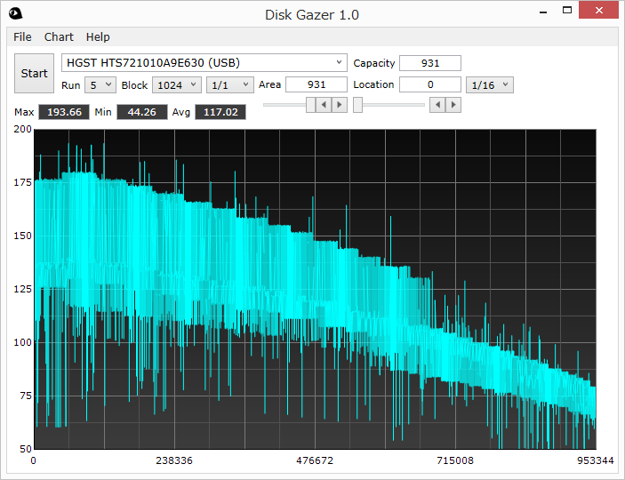

Do you know waves in a hard disk drive?

These line charts are read transfer rates at 5 points in a 1TB hard disk drive. The below is the full chart.
Maybe you have seen charts like this before. If you zoom in a specific point, you will see a wave there (I call plateaus of various heights "wave" not spikes upward or downward).
Here is the charts of another hard disk drive. You can see waves of different forms.


Are they just meaningless noises?
- No, not at all. They are real and perfectly reproducible. If you use a measuring tool which has enough fineness, you can see them.
Dose it happen to these drives only?
- No, not at all. As far as I know, all modern hard disk drives have their own wave forms. To be accurate, every unit of every model of hard disk drive has its own unique wave forms.
So what are these waves?
- I have no clear answer. However, I have a hypothesis that each plateau represents a group of tracks in a zone on a recording surface of a platter in a hard disk drive. There is no other reasonable explanation on them. If I try to describe how I reached this idea, it will be a little bit long story.
If you are interested in, check what waves your drive has with: